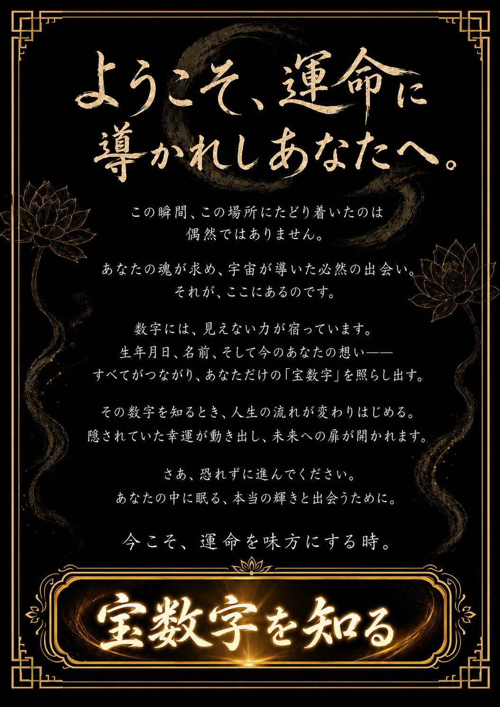
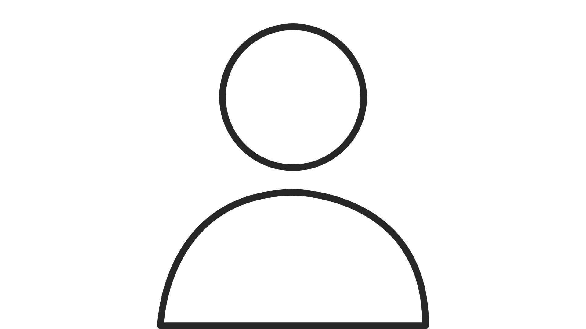
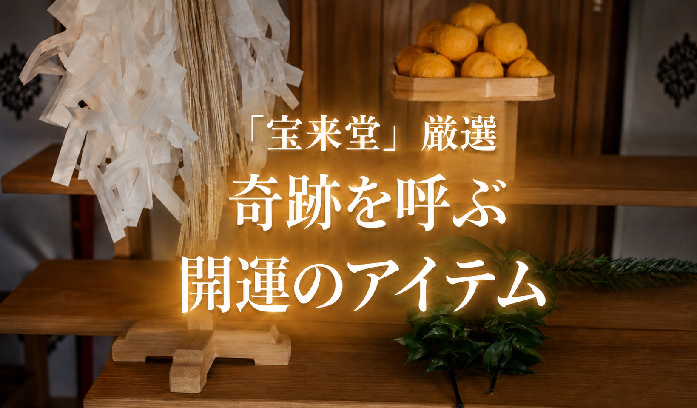
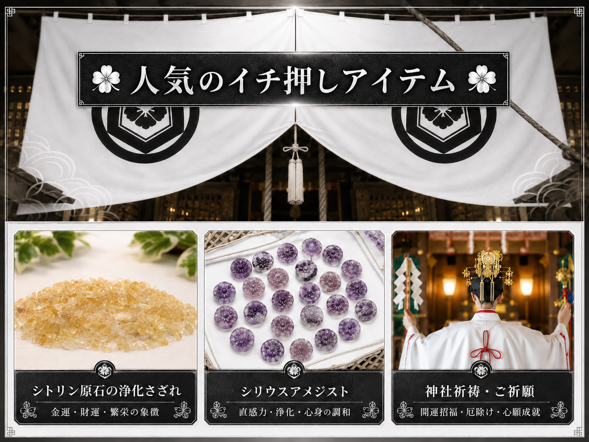
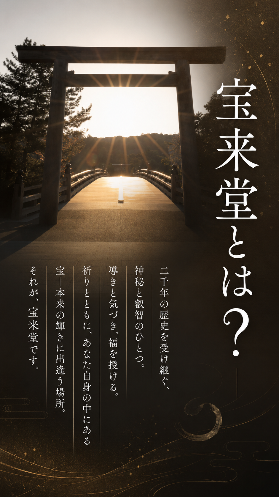

| お名前 | 名前 太郎 |
|---|---|
| 投稿日 | 2025/12/31 |
| 相談内容 | 金運 |
どん底だった時期に宝来堂さんに助けていただき、そこから驚くほど流れが変わりました。
おかげさまで金運にも恵まれ、まさかの当せんまで果たすことができて本当に驚いています。あの時、一歩を踏み出して本当に良かったです。これからも大切な場所として感謝を忘れません。
| お名前 | 名前 太郎 |
|---|---|
| 投稿日 | 2025/12/31 |
| 相談内容 | 金運 |
精神的にも金銭的にも厳しい時期があり、藁をもすがる思いでこちらに頼らせていただきました。親身になっていただき、心がすっと軽くなったのを今でも覚えています。
その後、不思議なほど金運が回り始め、なんと宝くじ（※懸賞など）の当せんにも恵まれるという奇跡が起きました。宝来堂さんに出会えていなければ、今の幸せな生活はなかったと思います。心から感謝しています。


